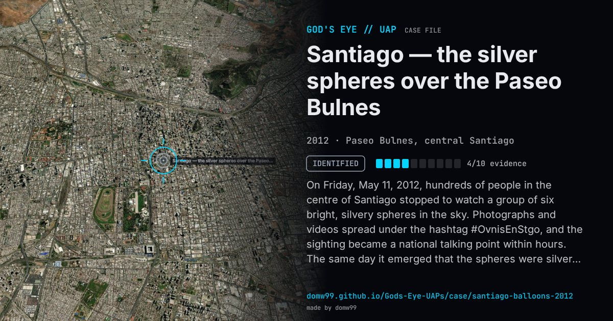

Santiago — the silver spheres over the Paseo Bulnes

On Friday, May 11, 2012, hundreds of people in the centre of Santiago stopped to watch a group of six bright, silvery spheres in the sky. Photographs and videos spread under the hashtag #OvnisEnStgo, and the sighting became a national talking point within hours. The same day it emerged that the spheres were silver helium balloons released from the Paseo Bulnes by students of the Universidad Mayor’s school of architecture, as an installation in a competition between four student groups intended to screen the view towards the La Moneda palace.
Explanation
The objects were silver helium balloons released from the Paseo Bulnes by architecture students of the Universidad Mayor, one of four groups in a school competition; the installation was meant to block the view of La Moneda.
What was seen
Shape: Six bright silvery spheres
Witnesses: Hundreds of people in the centre of Santiago
Duration: Hours, until the explanation came
Sources
- 24 Horas — the balloons that frightened Santiago
- El Dínamo — the collective psychosis over #OvnisEnStgo (May 11, 2012)
Browse
- Chile
- 2010s
- Identified
- Mass sightings
- Many independent witnesses
- Photographs
- Video footage
- Spheres and orbs